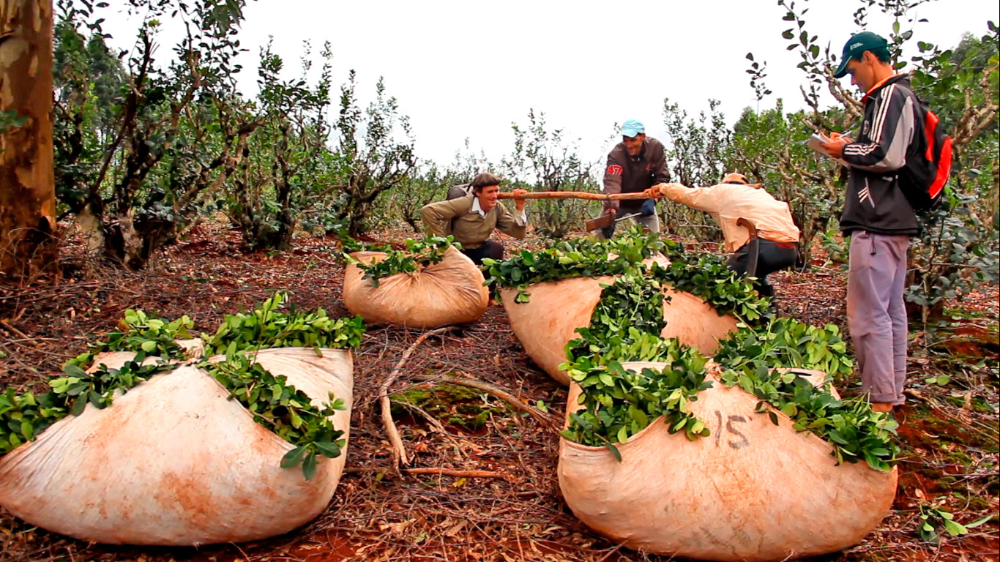

Nuestros productos están pensados de manera sostenible. Desde la concepción hasta la entrega, todo nuestro proceso está alineado con los principios de sostenibilidad.
Estamos compuestos por la naturaleza.
Buscamos en la naturaleza los ingredientes y conceptos de cada uno de nuestros productos.
Más que un simple producto, queremos permitir a nuestros clientes una experiencia única y natural.
¿En qué creemos?
En Rutas Orgánicas estamos convencidos de que le cambio comienza con nuestro plato. Al elegir orgánicos, alimentamos el desarrollo de pequeños agricultores familiares, preservamos la calidad del suelo y del agua, así como la biodiversidad argentina. Estos son alimentos que cuidan nuestro cuerpo y también la madre Tierra.

¿Qué es un propducto orgánico?
Es el obtenido dentro de un sistema de roducción agrícola orgánica, de forma sostenible, que beneficia el ecosistema local, protege los recursos naturales , respeta las características socioeconómicas y culturales de la comunidad local, preserva los derechos de los trabajadores involucrados, y no usa genéticamente cuerpos químicos modificados o sintéticos.
Ok pero... ¿Qué implica eso?
La agricultura orgánica no utiliza pesticidas, agrotónicos ni fertilizantes sintéticos. Es decir, son productos libres de venenos o fertilizantes químicos.
Simplemente... un alimento orgánico.
Respeta el ciclo natural de las plantas y el suelo y prioriza la diversificación de cultivos, lo que resulta en alimentos más saludables.
Conserva la calidad de nuestro suelo y agua, así como cuida también la salud de nuestros productores.
Respetan la biodiversidad vegetal, los insectos y los animales salvajes, que ayudan en la polinización y el equilibrio de la vida natural autóctona.
Nuestro campo de acción
Encontrar todos los productores de Yerbas y vinos orgánicos, asi como cualquier otro producto elaborado bajo los principio de la alimentación orgánica.
Lograr hacer conocer a la mayor parte de la población, qué son los Productos Orgánicos y cuales son los beneficios de su consumo.
Darle visibilidad y beneficios a los productores a través de Rutas Orgánicas y vender sus productos en todo el país.
Encontrar un camino de reunión eficaz entre el productor y el consumidor.
¿Por qué Rutas Orgánicas?
Soos la conexión más directa y efectiva entre el productor y el consumidor, mostrando de manera objetiva el camino que lleva al consumo de productos orgánicos.
RUTAS ORGÁNICAS
SEMBRAR EL FUTURO, ES IMPORTANTE.
CUIDAR LA NATURALEZA, ES ESENCIAL.